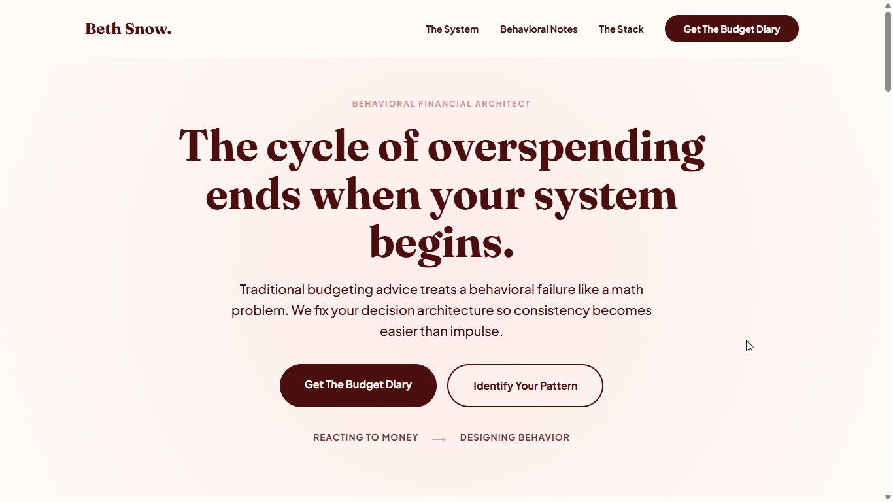
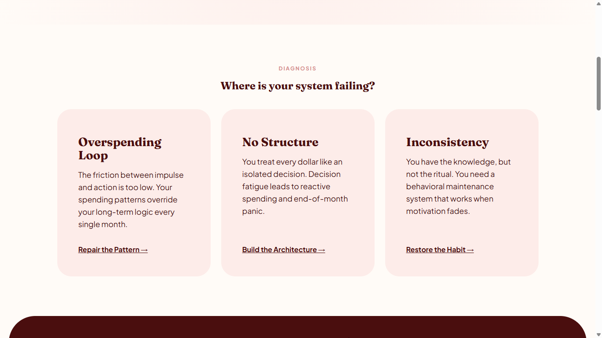
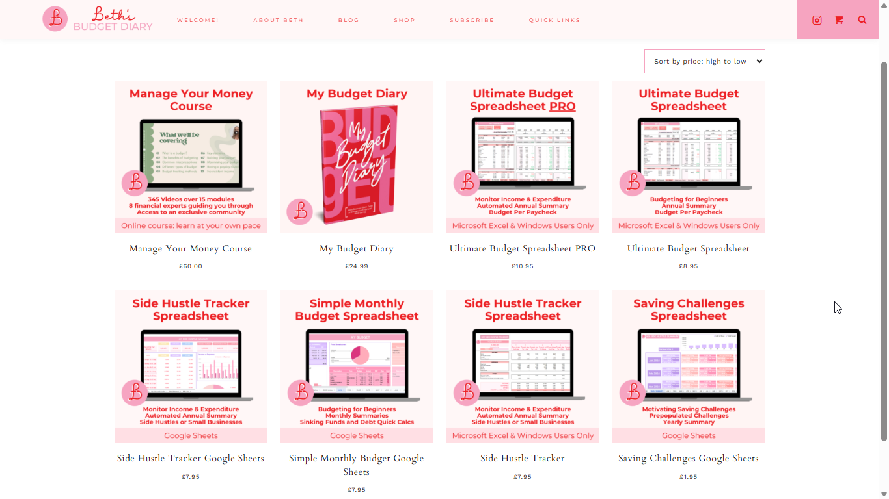
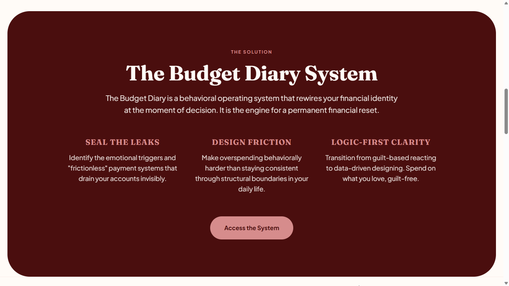
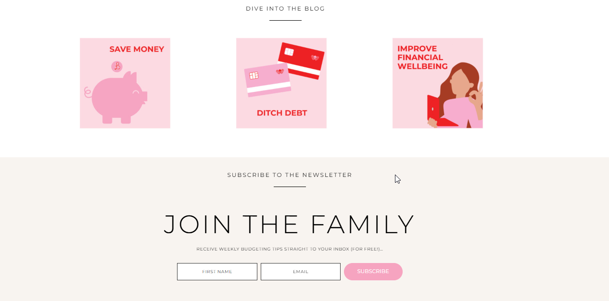
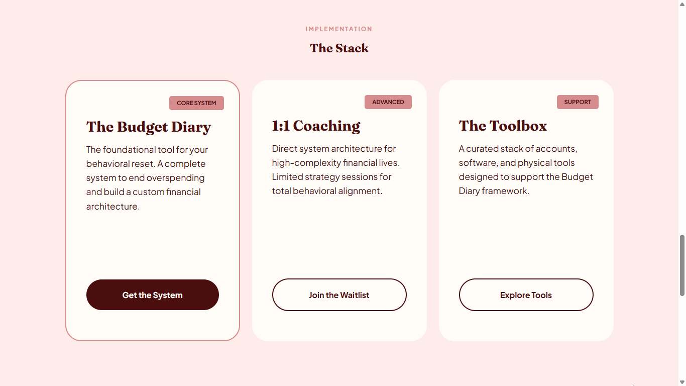

Most high-ticket websites don't fail because of traffic. They fail because the structure never guides a decision. We rebuild your page into a single, controlled conversion path where confusion cannot exist.
Request System Audit Only accepting businesses with $3,000+ offersConversion loss is not a design problem.
It happens when your page creates too many decisions and not enough direction.
When users have to think, compare, or interpret — they leave.
Users don't understand what this is in the first 3 seconds.
Too many paths. No clear next step.
The main offer is not visually or psychologically dominant.
Final action requires too much trust, effort, or thinking.
Every website has the same breakdown patterns: attention split across multiple ideas, unclear priority of offers, weak directional flow, friction at the point of action.
We remove all four.
We don't "improve design." We eliminate decision chaos.
Behavioral fragmentation—entry point fails to establish primary user context.

Architectural constraint—establishing a single-path value threshold.
Structural ambiguity—scattered routing creates decision fatigue.

Structured routing—navigation enforces a high-intent diagnostic flow.

Hierarchical collapse—competition between sub-offers triggers leakage.

Enforced hierarchy—isolating the core offer for maximum retention.

Terminal leakage—friction at the boundary prevents system commitment.

Boundary enforcement—removing structural noise to solidify the final action.
This is not branding feedback. It is structural diagnosis of revenue loss.
We don't fix early-stage positioning problems.
We fix conversion systems that are already working — but leaking revenue.
MANUAL REVIEW. RESPONSE WITHIN 48 HOURS.